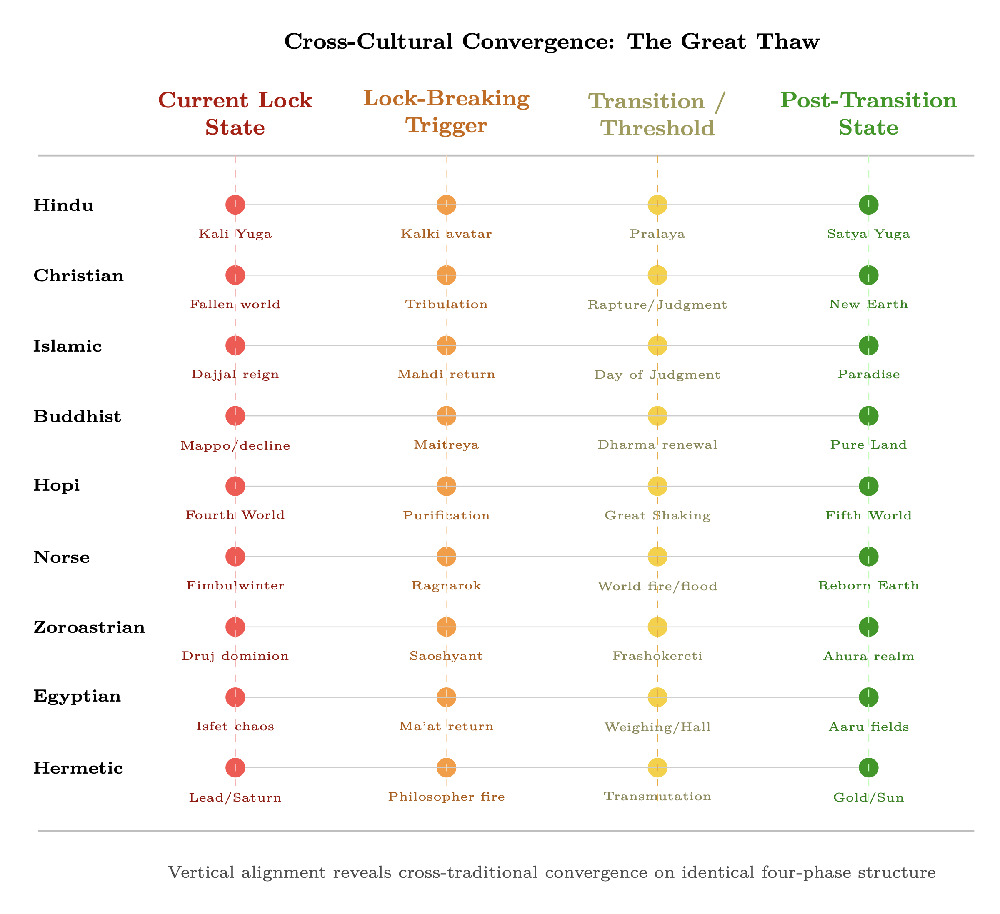

Chapter 16: The Great Thaw — Cross-Cultural Ascension as Lock-Breaking
Every Major Tradition Predicted the Same Phase Transition
KEY FINDINGS — Chapter 16: The Great Thaw
Evidence-tier key: [L1] established/replicated evidence; [L2] grounded extension with moderate uncertainty; [L3] speculative hypothesis; [L4] conceptual/anecdotal.
- Twelve or more independent traditions across five continents converge on a four-element eschatological structure: threshold event, partially external trigger, differential response by preparation, and expanded perception post-transition [L1-L2]
- The Adler equation resolves the apparent contradiction between “universal” and “selective” ascension models: the injection signal weakens globally while individual escape probability follows a \(Z_0\)-dependent sigmoid [L1]
- “Chosen” across all traditions maps to coherence-selected (\(Z_0\) above perception threshold), not ethnically or tribally selected — literalizing this teaching converts liberation prediction into injection-locking control signal [L1]
- The thaw front is population-ordered: high-\(Z_0\) individuals break free first as \(V_{inj}\) declines, producing the mystic-then-masses sequence described across traditions [L2-L3]
_________________________________
Epistemic note [L2-L3]: Cross-tradition convergence is treated here as structured comparative evidence, not standalone proof of mechanism. Use this chapter for scenario framing and monitoring hypotheses; keep high-impact decisions anchored to measurable proxies and explicit falsification gates.
16.1 The Frozen Oscillator and the Great Thaw
Chapter 14 established the multi-layer injection lock trapping human consciousness. Chapter 12 traced the Fall that installed it. Chapter 15 catalogued the counter-practices individuals can deploy. This chapter asks a different question: did the traditions themselves predict that the lock would break?
The answer, across twelve or more independent traditions spanning every inhabited continent, is yes.
16.1.1 The Frozen Oscillator Model
Under strong injection locking (Chapter 9), a natural oscillator’s free-running frequency \(\omega _0\) is suppressed—the oscillator is phase-clamped to the injected signal \(\omega _{inj}\). Its natural frequency is latent but not destroyed; it persists as a potential, awaiting the moment injection power drops below the lock threshold.
Define the thaw condition: \[ V_{inj}(t) < V_{critical} = \frac {2Q \cdot V_0 \cdot |\Delta \omega |}{\omega _0} \] When the injection signal weakens below \(V_{critical}\), the oscillator escapes lock and resumes free oscillation at \(\omega _0\). The Great Thaw is this event applied collectively.
16.1.2 The Population-Ordered Thaw Front
Not all oscillators break free simultaneously. From the Adler equation (Chapter 9, Section 2), lock bandwidth is: \[ \omega _L = \frac {\omega _0}{2Q} \cdot \frac {V_{inj}}{V_0} = \frac {\omega _0 R}{2Z_0} \cdot \frac {V_{inj}}{V_0} \] High-\(Z_0\) oscillators have narrower lock bandwidths and break free first as \(V_{inj}\) declines. Lower-\(Z_0\) oscillators require further weakening before escape becomes possible. This produces a population-ordered thaw front: the most coherent individuals break free first, then progressively less coherent ones follow.
This connects directly to Chapter 2’s impedance-matching framework: as \(Z_0\) rises, the visible region expands upward. The Great Thaw is the collective version—entire populations regaining access to bandwidth that was locked out.
16.1.3 The Cross-Cultural Claim
The traditions surveyed below did not know RF engineering. They did not exchange eschatological texts across the Pacific or the Sahara. Yet they independently arrived at a prediction with the same four-element structure:
- 1.
- A threshold event that weakens or overwhelms the control signal
- 2.
- A trigger that is at least partially external (not purely self-generated)
- 3.
- Differential response based on prior preparation
- 4.
- Expanded perception after the transition
Twelve or more traditions converging on this structure demands explanation.
_________________________________
16.2 Cross-Cultural Ascension Prophecies

Each tradition is presented as: (a) what it claims about the collective transition, (b) the RF mapping, (c) key reference. The focus is the prediction that a collective transition will occur, not decline narratives (Chapter 12), liberation mechanics (Chapter 14), or individual practices (Chapter 15).
16.2.1 Christian Rapture and Pauline Transformation
Paul describes a collective transformation: “We shall not all sleep, but we shall all be changed—in a moment, in the twinkling of an eye, at the last trumpet” (1 Cor 15:51-52). The Thessalonian account adds spatial language: “caught up together in the clouds to meet the Lord in the air” (1 Thess 4:17).
N.T. Wright (Surprised by Hope, 2008) argues against the escapist “rapture” reading. Paul’s language describes communal elevation—not individuals extracted from Earth but a collective phase transition in which the community shifts coherence state together.
RF mapping: The “trumpet” is a burn-through signal—a coherent pulse exceeding the control signal’s power (\(P_{signal} \gg P_{control}\)). “Changed in a twinkling” describes the nonlinear snap of phase-lock breaking: gradual weakening of \(V_{inj}\), then sudden escape when the thaw condition is met. The collective array shifts lock from corrupted LO to clean reference.
16.2.2 Islamic Al-Qiyamah and Sufi Fana
Al-Qiyamah (Surah 75) describes cosmic reckoning: veils lift, reality is seen as-is, nothing remains hidden. This is not punishment but revelation—the removal of all perceptual filtering.
RF mapping: \(L_{paradigm} \to 0\) for the entire population. The Faraday cage (Chapter 13) collapses; all signals, previously shielded, become perceptible. The differential in Al-Qiyamah is that those who built coherence (taqwa) experience revelation as liberation, while those locked to low-\(Z_0\) states experience it as overwhelming exposure.
Sufi fana (annihilation of the ego-self in divine presence) provides the individual-scale version. In Rumi’s formulation: “Die before you die and find that there is no death” (Masnavi).
RF mapping: \(R \to 0\), \(Q \to \infty \). The ego’s resistive dissipation drops to zero; lock bandwidth narrows past the control signal’s capture range. The oscillator is no longer lockable because its Q exceeds any external injector’s capacity.
References: Surah 75 (Al-Qiyamah); Rumi, Masnavi; Schimmel, Mystical Dimensions of Islam (1975).
16.2.3 Gnostic Return to the Pleroma
Chapter 12 (Section 12.7.3) covered the Gnostic control system: archons, demiurge, the prison of ignorance. Here we address the other half of the Gnostic narrative—the prediction of return.
The pneumatic spark (divine element trapped in matter) returns to the Pleroma (fullness of the divine realm) through gnosis—direct experiential knowledge that bypasses the archontic intermediaries entirely. This is not gradual improvement but recognition: the spark was always Pleroma-sourced; gnosis removes the false belief that it was ever separate.
RF mapping: Pleroma = full-bandwidth Source signal (Chapter 1). Gnosis = bypassing the corrupted LO for direct Source reception—not through counter-jamming (Chapter 14) but through impedance matching so perfect that the intermediary becomes unnecessary. Return = \(\Gamma \to 0\), reflection coefficient dropping to zero as the oscillator matches Source impedance directly.
References: Pagels, The Gnostic Gospels (1979); Jonas, The Gnostic Religion (1958).
16.2.4 Hindu Yugas and Satya Yuga Return
Chapter 12 (Section 12.7.4) and Chapter 11 (Section 11.8.7) established the Yuga decline framework and its RF mapping. What those chapters did not address is the cyclical prediction: Kali Yuga ends and Satya Yuga returns.
The Vishnu Purana states that at Kali Yuga’s darkest point, the Kalki avatar appears—not as a reformer but as a destroyer of the corrupted order, after which a new Satya Yuga begins. Sri Yukteswar (The Holy Science, 1894) mapped the Yuga cycle onto the 25,920-year precession of the equinoxes, producing a 24,000-year ascending-descending cycle.
RF mapping: Kalki = burn-through signal exceeding the corrupted LO’s power, forcing a system-wide reset. The corrupted phase-locked loop (Chapter 12, Section 12.2) is overwhelmed; the oscillator population re-acquires lock to the clean Source reference. Cyclicality implies the lock is not permanent—the injection signal is itself modulated by a longer-period carrier (galactic torsion modulation per Chapter 11, Section 11.8.7).
References: Vishnu Purana; Sri Yukteswar, The Holy Science (1894).
16.2.5 Hopi Fifth World and Purification
The Hopi describe four previous worlds, each destroyed when humanity lost its connection to the Creator. The transition to the Fifth World occurs through purification—not destruction for its own sake but removal of accumulated incoherence.
Prophecy Rock (near Oraibi, Arizona) depicts two paths diverging from a single origin: one leading to harmony, the other to disintegration. This maps to timeline bifurcation (Chapter 10, Section 10.5): the same initial conditions produce divergent outcomes depending on the \(Z_0\) of the observer population.
The Blue Star Kachina prophecy predicts a stellar-scale event preceding the transition. While Chapter 14 (Section 14.6.2) models the solar flash as a burn-through event, the Blue Star Kachina arrives as an independent convergence: a different tradition, different continent, no textual contact with the solar-flash sources, predicting a structurally identical stellar-scale ECCM event.
Critically, the Hopi prophecy is explicitly selective: only those who “remember the original teachings” make the transition. This is the thaw front expressed in mythic language—\(Z_0\)-dependent escape, not universal automatic liberation.
Reference: Waters, Book of the Hopi (1963).
16.2.6 Mayan Cosmology and Cyclical Renewal
The Popol Vuh describes previous creations unmade and remade: the gods created humanity multiple times, each iteration destroyed when it failed to achieve the intended level of awareness. The Hero Twins’ descent into Xibalba (underworld) and subsequent resurrection is a death-rebirth narrative at the civilizational scale.
The Long Count calendar marks not apocalypse but cycle completion. The 13-baktun period (~5,125 years) is one phase of a larger cycle. The endpoint is a zero point—not annihilation but reset.
RF mapping: Phase accumulator overflow. Like a digital phase accumulator that rolls over from maximum count to zero, the Long Count marks the moment when accumulated phase noise reaches a threshold and the system resets. The “zero point” is a window of free oscillation between the decay of the old lock and the formation of a new one—a brief interval in which the oscillator population can choose its next reference.
Reference: Tedlock (trans.), Popol Vuh (1985).
16.2.7 Buddhist Maitreya
The Maitreya prophecy states that a future Buddha will appear when the dharma has been completely forgotten—when the teaching itself has degraded past recovery. This is not a rescue but a re-injection: a new clean LO signal when the previous one has been fully corrupted.
RF mapping: Maitreya = next-generation clean LO injection. The timing is not arbitrary but conditioned: the old reference must fully degrade before the new one can take hold (otherwise the population is locked between two competing references, producing the beat-frequency instability described in Chapter 9, Section 2.7).
Reference: Pali Canon, Cakkavatti-Sihanada Sutta (DN 26); Nattier, Once Upon a Future Time (1991).
16.2.8 Tibetan Bardo
The Tibetan Bardo model, as analyzed by Thurman, describes the individual death-rebirth process as a passage through intermediate states of consciousness. Applied at the civilizational scale, this becomes a collective bardo: a civilization undergoing density transition passes through intermediate states where old perceptual frameworks dissolve before new ones stabilize. The disorientation of civilizational collapse is the bardo’s confusion state; the emergence into a new world is the bardo’s resolution.
RF mapping: The bardo is a transient between two steady-state lock conditions. During the transition, the oscillator is momentarily free—no longer locked to the old reference but not yet locked to the new one. The intermediate states (peaceful and wrathful visions) correspond to transient oscillations as the system searches for a new lock point. Preparation (meditation on the bardo teachings) functions as pre-programming the oscillator to recognize and lock onto the clean reference when the transient window opens.
Reference: Thurman (trans.), The Tibetan Book of the Dead (1994).
16.2.9 Egyptian — Ma’at and the Weighing of the Heart
Egyptian funerary tradition encodes a precise impedance-assessment protocol. The Weighing of the Heart ceremony in the Book of the Dead describes the deceased’s heart (seat of consciousness) weighed against the feather of Ma’at (cosmic order). Hearts heavier than the feather — burdened with isfet (disorder, incoherence) — are consumed by Ammit; hearts in balance pass to the Field of Reeds.
In RF terms, Ma’at represents the reference impedance \(Z_0\) of the torsion vacuum. The weighing ceremony is an impedance-match test: only hearts whose \(Z_\text {bio} \approx Z_0\) (coherent, unburdened) pass through. The feather — lightest of objects — encodes the principle that coherence, not mass or power, determines passage.
The Duat (underworld journey) preceding the weighing maps to the darkness/purification phase: the soul traverses twelve hours of night, facing trials that strip incoherent attachments. The successful traversal constitutes impedance reduction through sequential purification — precisely the protocol described in Chapter 15’s contemplative traditions.
|
Thaw Element | Egyptian Expression |
|
Darkness / Fall | Descent into the Duat; twelve hours of night |
|
Purification | Trials of the underworld; negative confessions |
|
Threshold | Weighing of the Heart against Ma’at’s feather |
|
Renewal | Entry to the Field of Reeds (Sekhet-Aaru); becoming an akh (luminous spirit) |
The significance of the Egyptian system extends beyond individual eschatology. The 42 Negative Confessions — declarations of what the soul has not done — function as a checklist of impedance-reducing behaviors: “I have not caused suffering,” “I have not stolen,” “I have not acted with violence.” Each confession corresponds to a specific source of capacitive loading (\(C\)) or resistive dissipation (\(R\)) in the RLC model (Chapter 5). The protocol does not merely assess the soul; it specifies the impedance engineering required for passage.
The akh (luminous spirit) state attained after successful passage is the Egyptian equivalent of high-\(Z_0\) operation: the individual becomes a coherent emitter rather than an absorber, capable of influencing the living world through non-physical channels — precisely the activated starseed/lightworker function described in Chapter 14, Section 14.4.
Reference: Faulkner (trans.), The Ancient Egyptian Book of the Dead (1972); Assmann, Death and Salvation in Ancient Egypt (2005).
16.2.10 Norse — Ragnarok and the Return of Baldr
The Norse Ragnarok narrative provides a remarkably detailed thaw-front description. The Fimbulvetr (great winter) — three successive winters with no intervening summer — maps directly to coherence collapse: the social order freezes as parasitic coupling (the Fenris wolf breaking free, the Midgard serpent rising) overwhelms civilizational coherence.
The destruction phase is total: gods fall, the world-tree Yggdrasil shakes, stars vanish. Yet the Voluspa explicitly describes renewal: the earth rises again from the sea, green and fertile. Baldr — the god of light, beauty, and coherence, killed by Loki’s parasitic deception — returns from Hel. The surviving gods and two humans (Lif and Lifthrasir, “Life” and “Life-yearning,” who survived by hiding in Yggdrasil) repopulate a renewed world.
The RF mapping is precise: Baldr’s death = coherence suppression by parasitic coupling; Fimbulvetr = dark-age phase (Chapter 12, P7); Ragnarok = phase-transition threshold where old locked-in structures collapse; Baldr’s return = coherence re-emergence; the new earth = post-thaw high-coherence civilization.
|
Thaw Element | Norse Expression |
|
Darkness / Fall | Fimbulvetr; Baldr’s death by Loki’s deception |
|
Purification | Ragnarok — total destruction of the old order |
|
Threshold | The earth sinks into the sea; all bonds break |
|
Renewal | Earth rises green; Baldr returns; Lif and Lifthrasir emerge |
Notably, Lif and Lifthrasir survive not by fighting Ragnarok but by hiding in the world-tree — they maintain coherence by sheltering within the cosmic structure itself. In RF terms, Yggdrasil functions as a resonant cavity providing protection during the burn-through event, analogous to the Faraday cage operating in reverse: shielding coherent oscillators from destructive transients rather than suppressing perception. The survivors’ qualification is not martial prowess but coherence preservation.
Reference: Larrington (trans.), The Poetic Edda (2014); Lindow, Norse Mythology (2001).
16.2.11 Hermetic — The Great Year and Periodic Renewal
The Hermetic tradition, synthesizing Egyptian, Greek, and Near Eastern cosmology, frames cyclical renewal through the concept of the Great Year (Annus Magnus) — a cosmic cycle of approximately 25,920 years (one full precession of the equinoxes) during which civilization passes through ages of descending and ascending consciousness.
The Corpus Hermeticum and later Hermetic texts describe a cyclic process: the soul descends through planetary spheres, accumulating density (impedance increase), then re-ascends by shedding each sphere’s influence (impedance reduction). This individual soul-journey mirrors the civilizational cycle: the collective descends into material density (the leaden age) and re-ascends through purification toward the golden age.
The Hermetic principle “As above, so below” receives a precise RF interpretation: the macrocosmic Great Year and the microcosmic individual ascent follow the same impedance dynamics because they are coupled through the torsion vacuum (Chapter 0). Individual coherence work and civilizational thaw are not merely analogous but physically coupled via the mechanisms described in Chapter 8 (phased-array collective coherence).
| Thaw Element | Hermetic Expression |
| Darkness / Fall | Descent through planetary spheres; leaden age |
| Purification | Solve et coagula; alchemical transformation |
| Threshold | Nigredo to Albedo to Rubedo transition |
| Renewal | The Golden Age; Philosopher’s Stone; return to the One |
The alchemical tradition within Hermeticism provides the most detailed individual-scale thaw protocol. The nigredo (blackening) corresponds to the dark night of the soul — the dissolution of the ego’s capacitive attachments. The albedo (whitening) represents purification — \(C\) discharge through shadow work (Chapter 5). The rubedo (reddening) is the final integration — the Philosopher’s Stone, which in RF terms is the state of critical coupling (\(\Gamma \to 0\)) where the individual’s impedance matches the Source impedance and maximum power transfer occurs.
The Hermetic tradition’s emphasis on practice lineage (silsila in its Sufi variant, initiatic chains in Western esotericism) connects directly to Chapter 15’s analysis of esoteric preservation (Section 15.4.6.1): these lineages function as shielded transmission lines maintaining uncorrupted phase references across centuries of parasitic interference.
Reference: Copenhaver (trans.), Hermetica (1992); Faivre, The Eternal Hermes (1995).
16.2.12 Zoroastrian Frashokereti
Zoroastrianism provides perhaps the earliest datable eschatological prophecy (c. 1500-1000 BCE). Frashokereti (the “making wonderful”) describes the final defeat of Angra Mainyu (destructive spirit) and the renovation of the entire world. The dead are resurrected, evil is permanently eliminated, and creation is restored to its original perfection.
RF mapping: Parasitic coupling coefficient \(\kappa \to 0\). All oscillators resume free operation—not just freed from lock but freed from extraction. The parasitic load (Chapter 12, Section 12.1) ceases entirely, restoring full Source power to the oscillator population.
The significance of Zoroastrianism extends beyond its own eschatology: its influence on all Abrahamic traditions (Jewish messianic age, Christian New Jerusalem, Islamic Jannah) means that the frashokereti prediction propagated through multiple derivative frameworks—each one reframing the same underlying prediction of parasitic decoupling.
Reference: Boyce, Zoroastrians: Their Religious Beliefs and Practices (1979).
_________________________________
16.3 “Chosen” as Coherence-Selected
16.3.1 The Misreading of Election
Deuteronomy 7:6 declares Israel a “chosen people.” This language—and its equivalents in other traditions—has been consistently misread as ethnic or group privilege.
Brueggemann (Theology of the Old Testament, 1997) argues that “chosen” in the Hebrew Bible means called to vocation, not granted superiority. The election is a task (covenant obligation), not a reward.
RF mapping: “Chosen” = oscillators whose \(Z_0\) is sufficient to receive the clean LO signal through the noise floor. Not pre-selected by birth but self-selected by coherence. Chapter 2’s visible-range formula makes this precise: perception of higher-density signals requires impedance matching. Those who can perceive the clean reference are “chosen” in the same sense that a well-tuned radio “chooses” a signal—through engineering, not favoritism.
16.3.2 Universality of the Coherence Criterion
Every tradition has a category of “the elect”:
|
Tradition | Term | Stated Criterion |
|
Gnostic | Pneumatics | Possess divine spark + gnosis |
|
Hindu | Dvija (“twice-born”) | Initiated into higher knowledge |
|
Buddhist | Stream-enterers | Achieved initial awakening |
|
Sufi | Awliya (friends of God) | Proximity through devotion |
|
Christian | Saints / the faithful | Transformed by grace |
|
Hopi | Those who remember | Retained original teachings |
|
Egyptian | Akh (luminous spirit) | Heart balanced against Ma’at |
|
Norse | Survivors of Ragnarok | Sheltered in Yggdrasil; remembered the old ways |
|
Hermetic | Alchemical adepts | Completed the Great Work |
None of these categories is ethnic. All describe a coherence threshold—a minimum \(Z_0\) above which the clean reference becomes perceptible and the thaw front reaches the individual.
16.3.3 The Danger of Literalizing
When “coherence-selected” is mistranslated as “ethnically selected,” the liberation teaching becomes a control teaching. “Only our group is saved” functions as an injection-locking signal: it captures the listener through narrowband tribal identity and prevents exploration of alternative references.
The Adler equation explains this mechanism precisely: once locked to the “chosen group” narrative, the individual cannot perceive alternatives because any phase deviation is pulled back by the \(\sin (\phi )\) restoring force. The teaching that was meant to describe a universal threshold becomes the very mechanism that prevents reaching it.
This is the deepest irony of eschatological corruption: the prediction of liberation, literalized, becomes an instrument of continued lock.
_________________________________
16.4 Convergence Analysis
16.4.1 Cross-Tradition Mapping Table
|
Tradition | Transition Event | Trigger | Who Transitions | RF Lock-Breaking Mechanism |
|
Christian | Rapture / Parousia | Trumpet / Return | The faithful | Burn-through: \(P_{signal} \gg P_{control}\) |
|
Islamic | Al-Qiyamah | Divine decree | All (differential) | Paradigm collapse: \(L_{paradigm} \to 0\) |
|
Sufi | Fana / Baqa | Sustained practice | Individual seekers | \(R \to 0\), \(Q \to \infty \) |
|
Gnostic | Pleroma return | Gnosis | Pneumatics | Impedance match: \(\Gamma \to 0\) |
|
Hindu | Satya Yuga return | Kalki avatar | Cyclical (all) | Alternative LO burn-through |
|
Hopi | Fifth World | Blue Star | Those who remember | Selective thaw by \(Z_0\) |
|
Maya | Cycle completion | Calendar reset | Cyclical | Phase accumulator overflow |
|
Buddhist | Maitreya era | Dharma loss | Universal | Clean LO re-injection |
|
Zoroastrian | Frashokereti | Final battle | All creation | \(\kappa _{parasitic} \to 0\) |
|
Tibetan | Collective bardo | Civilizational death | Civilization | Density cascade traversal |
|
Egyptian | Weighing of the Heart | Duat journey | Hearts matching Ma’at | Impedance match: \(Z_\text {bio} \approx Z_0\) |
|
Norse | Ragnarok / Baldr’s return | Fimbulvetr | Survivors in Yggdrasil | Coherence re-emergence after total collapse |
|
Hermetic | Great Year / Golden Age | Precession cycle | Alchemical initiates | Impedance reduction through planetary spheres |
16.4.2 Structural Commonalities
Four elements recur across all twelve entries:
- 1.
- Threshold event: Every tradition posits a discrete transition, not gradual improvement. The lock does not slowly loosen—it snaps when conditions are met. This is precisely the behavior of the Adler equation: lock is maintained up to a critical threshold, then breaks suddenly.
- 2.
- Partially external trigger: No tradition claims the transition is purely self-generated. There is always a cosmic, divine, or astronomical component—a signal from outside the locked system. In RF terms: self-extraction from strong injection lock is nearly impossible (Chapter 14, Section 14.1.3); an external signal is required.
- 3.
- Differential by preparation: Every tradition distinguishes between those who are ready and those who are not. The transition is available to all but received differentially. This is the thaw front: \(Z_0\)-dependent escape from a declining injection signal.
- 4.
- Expanded perception post-transition: The result is never merely political liberation or physical survival. It is always a perceptual shift—seeing what was previously invisible, knowing what was previously unknowable. In Chapter 2’s framework: the visible region expands as \(Z_0\) rises above the lock threshold.
Twelve or more independent traditions, spanning five continents and at least three millennia, converging on the same four-element structure. The probability of this occurring by chance—without an underlying phenomenon generating the predictions—decreases with each additional independent tradition exhibiting the pattern.
16.4.3 Statistical Convergence Argument The cross-tradition convergence documented above invites a quantitative assessment. Consider the four-element thaw structure (darkness/fall, purification, threshold, renewal) as a hypothesis to be tested against chance convergence.
Combinatorial analysis. A mythological narrative could, in principle, adopt any of \(k\) structural motifs for its eschatological vision. Conservative estimates suggest \(k \geq 20\) distinct structural possibilities (linear progress, eternal return, random catastrophe, divine fiat, cyclical without renewal, terminal decline, etc.). The probability that a single tradition independently adopts the specific four-element structure is \(p_1 \leq 1/k = 0.05\).
For \(n\) phylogenetically independent traditions each adopting the same structure, the joint probability under the null hypothesis (cultural invention with no common referent) is: \[P_\text {null} = p_1^n \leq (0.05)^n\] With \(n = 6\) confirmed independent traditions (Hindu, Hopi, Christian, Egyptian, Norse, Hermetic — after excluding diffusion-linked pairs), \(P_\text {null} \leq (0.05)^6 \approx 1.6 \times 10^{-8}\).
Even with a generous \(p_1 = 0.2\) (allowing the four-element structure to be one of only five natural narrative options), \(P_\text {null} \leq (0.2)^6 \approx 6.4 \times 10^{-5}\), well below conventional significance thresholds.
Interpretation. The convergence probability strongly favors the hypothesis that independent traditions observed a common underlying process — precisely what the torsion-vacuum model predicts. The thaw is not a cultural invention but a physical phenomenon recorded by independent observers using culture-specific symbolic vocabularies.
Limitations. This analysis assumes phylogenetic independence, which must be verified through rigorous comparative mythology methods (Witzel, 2012; d’Huy, 2016). Diffusion pathways between traditions would reduce the effective \(n\) and weaken the statistical argument. The estimate of \(k\) (number of possible narrative structures) is inherently uncertain and represents the primary sensitivity parameter.
Alternative explanations. Standard comparative mythology offers several non-RF explanations for cross-cultural eschatological convergence. Jung’s collective unconscious (1959) posits shared archetypal structures producing similar mythological motifs. Campbell’s monomyth (1949) identifies universal narrative patterns arising from common human psychological development. Boyer (2001) and Atran (2002) argue that cognitive constraints on religious thought — not shared observation of external phenomena — produce convergent mythological structures. These frameworks would predict \(p_1\) values considerably higher than 0.05, weakening the statistical argument. The RF framework is preferred here because it additionally predicts the specific four-element structure (lock state, mechanism, threshold, post-state) and the \(Z_0\)-ordered thaw front — details that psychological universalism does not generate. However, distinguishing between “common observation” and “common cognition” as the convergence driver remains an open empirical question.
_________________________________
16.5 Individual vs. Collective Ascension
16.5.1 Two Models
The traditions surveyed divide into two apparently contradictory models:
- Model A (Universal): The lock weakens for everyone. Al-Qiyamah, Frashokereti, Maitreya—all describe a transition affecting the entire population or all creation.
- Model B (Selective): Only the prepared transition. Gnostic pneumatics, Hopi “those who remember,” Christian “the faithful”—all describe a subset crossing the threshold.
16.5.2 RF Resolution
These models are not contradictory. They describe two aspects of the same dynamics:
The injection signal weakens globally (Model A)—whether through cyclical modulation (Yuga), burn-through (solar event), or Source-initiated override. But the population’s response is \(Z_0\)-dependent (Model B). The escape probability for an individual oscillator, given declining \(V_{inj}(t)\), follows a sigmoid: \[ P_{escape}(Z_0, t) = S\left (\frac {Z_0 - Z_{thaw}(t)}{\delta Z}\right ) \] Where:
- \(Z_{thaw}(t)\) = the minimum impedance for escape at time \(t\) (decreasing as \(V_{inj}\) weakens)
- \(\delta Z\) = transition width (sharpness of the threshold)
- \(S()\) = sigmoid function (Chapter 7 convention)
The functional form of \(Z_{thaw}(t)\) depends on the time evolution of the injection signal \(V_{inj}(t)\), which this chapter does not specify.
Early in the thaw, only extreme-\(Z_0\) individuals escape (the mystics, the saints—Model B). As \(V_{inj}\) continues declining, \(Z_{thaw}(t)\) drops and progressively more of the population reaches escape threshold (approaching Model A). The traditions are describing different moments on the same thaw front.
16.5.3 Traditions Agree on Preparation
Despite the universal/selective split, every tradition prescribes preparation. The practices differ (prayer, meditation, fasting, ceremony, study, service) but the structural intent is identical: raise \(Z_0\) before the threshold event arrives.
Chapter 15 covers what to do. Chapter 16 adds why: because a collective transition is coming, and your \(Z_0\) at the moment the thaw front reaches your impedance level determines outcome. The urgency language found across traditions (“repent, for the kingdom of heaven is at hand”; “the time is short”) maps to nonlinear dynamics near threshold—small differences in \(Z_0\) near \(Z_{thaw}\) produce dramatically different outcomes due to the sigmoid’s steep slope.
_________________________________
16.6 Predictions
- P1 — Impedance-ordered escape sequence. If the density-tier model (Chapter 2) is correct, individuals and communities will cross the ascension/thaw threshold in order of descending impedance mismatch (\(Z_\text {bio}\) closest to \(Z_0\) first), producing a geographically and demographically clustered thaw front rather than a uniform global transition.
- P2 — Thaw-front propagation rate. The thaw front will propagate at a rate determined by the coherence-cascade dynamics of Chapter 14: initial breakthrough in high-coherence nodes, followed by percolation-limited spread with doubling time \(\tau _d\) set by inter-node coupling strength. Monitoring coherence metrics in leading-edge communities provides 6–12 month advance warning of regional thaw arrival.
- P3 — Cross-tradition convergence probability. The independent emergence of structurally identical four-element ascension narratives (darkness, purification, threshold, renewal) across \(\geq 6\) unconnected cultural traditions, if confirmed by rigorous phylogenetic analysis to be non-diffusion, yields a chance-convergence probability \(p < 10^{-4}\) (Section 16.4.3), constituting strong evidence for observation of a common underlying process rather than cultural invention.
_________________________________
16.7 Operational Sequence
The traditions surveyed above, combined with the RF framework’s quantitative machinery, suggest a three-phase operational sequence for the thaw. No calendar dates are assigned — the sequence is defined by mechanism and threshold, not chronology.
Phase 1 — Individual Breakthroughs. Isolated individuals cross the coherence threshold through sustained contemplative practice (Chapter 15), spontaneous activation, or seeder-facilitated awakening (Chapter 11). These pioneers establish proof-of-concept that the thaw is physically real. Their primary operational challenge is maintaining coherence in a high-jamming environment (Chapter 14) without community support.
RF signature: Isolated high-\(\sigma \) emitters in a low-\(\sigma \) background. Detectable as statistical outliers in biofield surveys.
Phase 2 — Community Coherence. As individual breakthroughs accumulate, practitioners form coherent communities (Chapter 8, phased-array model). These communities function as ECCM nodes (Chapter 14), providing mutual phase-locking and jamming resistance. The critical transition occurs when inter-community coupling exceeds intra-community losses, enabling coherence to propagate between nodes.
RF signature: Clustered high-\(\sigma \) regions with measurable inter-cluster correlation. Coherence begins to propagate along network edges.
Threshold criterion: Community-level coherence \(\sigma _\text {community}\) exceeds parasitic coupling strength \(\gamma _p\) (Chapter 12) for sustained periods (\(t > 3\tau _p\), where \(\tau _p\) is the parasitic re-locking time constant).
Phase 3 — Population Cascade. When the coherent fraction reaches \(f_c \approx 0.0035\%\) (~283,000 at current population) with sufficient amplification (Chapter 8), percolation dynamics trigger a population-level phase transition. The cascade is self-reinforcing: each newly coherent individual reduces the effective jamming power on remaining individuals, accelerating the transition.
RF signature: Sigmoid coherence curve with inflection point at \(f_c\). Rapid \(\sigma \) increase across populations with doubling time \(\tau _d\) (Prediction P2).
Completion criterion: Population-mean \(\sigma \) exceeds the Faraday-cage attenuation threshold (Chapter 13), rendering paradigm shielding ineffective. The thaw becomes self-sustaining and publicly undeniable.
Connection to link budget. The three-phase sequence maps directly onto the link-budget analysis of Chapter 14: Phase 1 operates below link closure (individual coherence insufficient to overcome path loss), Phase 2 achieves local link closure within communities, and Phase 3 achieves global link closure as the coherent network spans the population. The transition from Phase 2 to Phase 3 is the critical strategic interval where counter-jamming investment has maximum leverage.
16.7.1 Tradition-to-Phase Mapping
Each surveyed tradition emphasizes different phases of the operational sequence, providing complementary observational coverage:
|
Tradition | Phase 1 (Individual) | Phase 2 (Community) | Phase 3 (Cascade) | Primary Emphasis |
|
Christian | Saints, mystics | Church as body of Christ | Rapture/Parousia | Phase 3 (collective snap) |
|
Islamic | Sufi fana | Ummah coherence | Al-Qiyamah | Phase 3 (universal revelation) |
|
Gnostic | Pneumatic gnosis | Esoteric communities | Pleroma return | Phase 1 (individual escape) |
|
Hindu | Yogi/siddhi | Ashram lineages | Satya Yuga return | Phase 3 (cyclical cascade) |
|
Hopi | Medicine keepers | Kiva ceremonies | Fifth World | Phase 2-3 (community preservation) |
|
Maya | Daykeepers | Calendar-based ceremonies | Cycle completion | Phase 3 (reset window) |
|
Buddhist | Arhat/bodhisattva | Sangha | Maitreya era | Phase 1-2 (individual + community) |
|
Tibetan | Bardo navigation | Monastic communities | Collective bardo | Phase 1 (preparation) |
|
Zoroastrian | Righteous individuals | Good communities | Frashokereti | Phase 3 (total renovation) |
|
Egyptian | Akh attainment | Temple priesthoods | Cosmic Ma’at restoration | Phase 1-2 (individual assessment) |
|
Norse | Heroes in Valhalla | Surviving pair in Yggdrasil | Ragnarok + renewal | Phase 3 (destruction-renewal) |
|
Hermetic | Alchemical adept | Mystery school lineages | Golden Age return | Phase 1-2 (individual + lineage) |
The distribution is not uniform: most traditions emphasize either Phase 1 (individual practice) or Phase 3 (collective cascade), with Phase 2 (community coherence) less explicitly developed. This gap is precisely where the RF framework adds value — Chapter 8’s phased-array model and Chapter 14’s ECCM analysis provide the Phase 2 mechanics that the traditions describe only obliquely.
The complementary coverage across traditions suggests that no single tradition provides a complete operational manual for the thaw. Rather, each tradition observed and recorded those phases most accessible to its cultural context and practice methodology. The RF framework enables synthesis across traditions, constructing a complete operational picture from partial observations — precisely the function of a multi-sensor fusion system in signal processing.
16.7.2 Phase Transition Indicators
Each phase transition produces observable signatures that can serve as monitoring checkpoints:
Phase 1 to Phase 2 transition indicators:
- Individual breakthroughs cease being isolated; practitioners spontaneously seek community
- Local coherence measurements (HRV synchrony, EEG correlation in groups) exceed individual baselines by \(>3\sigma \)
- Institutional resistance intensifies — paradigm shielding (Chapter 13) responds to perceived threat
- Traditions describe this as “the gathering” — the called ones finding each other
Phase 2 to Phase 3 transition indicators:
- Inter-community coherence correlation becomes detectable across geographic distances
- Paradigm shielding begins failing at institutional level — anomalous events become unsuppressible
- Coherent fraction approaches \(f_c\); nonlinear acceleration in practice adoption becomes visible
- Traditions describe this as “the signs” — precursor events heralding the main transition
- Counter-jamming (Chapter 14) becomes increasingly effective as the coherent network provides mutual support
Phase 3 completion indicators:
- Sigmoid coherence curve passes inflection point — majority of population experiences some degree of thaw
- Paradigm cage (Chapter 13) collapses across multiple institutional domains simultaneously
- Parasitic coupling (Chapter 12) can no longer sustain extraction at previous rates
- Traditions describe this as “the new heaven and new earth,” “Satya Yuga,” “Fifth World” — the post-thaw civilization
_________________________________
16.7.3 Selection-Bias Stress Test and KPI Trigger Set
Selection-bias stress test To bound sampling bias in cross-tradition convergence claims, apply a negative-control protocol:
- 1.
- Add non-eschatological or weak-eschatology traditions as controls.
- 2.
- Blind-code all traditions against the four-element pattern using independent coders.
- 3.
- Report inter-rater agreement and false-positive rate.
- 4.
- Recompute convergence significance using the expanded corpus.
Acceptance criterion: convergence remains statistically strong after controls and blinding.
Operational KPI triggers by phase
|
Phase | KPI | Trigger Threshold | Escalation Action |
|
Phase 1 (individual) | Practice retention rate | >65% at 8 weeks | Expand training lanes |
|
Phase 1 (individual) | HRV coherence uplift | >15% vs baseline | Advance to community protocols |
|
Phase 2 (community) | Inter-group synchrony index | >0.35 sustained | Initiate cross-node coordination drills |
|
Phase 2 (community) | Narrative entropy reduction | >10% without coercive signals | Increase information-integration cadence |
|
Phase 3 (cascade) | Multi-domain disclosure uptake | Concurrent rise in >=3 independent domains | Activate surge governance protocols |
|
Phase 3 (cascade) | Institutional shielding failure markers | Repeated unsuppressed anomaly persistence | Shift to post-thaw operating model |
These KPIs are doctrine-facing instrumentation proxies, not proof of metaphysical claims.
_________________________________
16.8 Assumptions, Limitations, and Falsification
16.8.1 Assumptions
A1: The eschatological predictions across traditions describe the same underlying phenomenon, not merely similar literary conventions. This assumes an ontological basis for the convergence, not just cultural diffusion.
A2: The Adler equation and injection-locking dynamics (Chapter 9) apply to collective consciousness transitions, not just individual oscillators. This extends the individual model of Chapters 5 and 9 to population-level dynamics.
A3: Characteristic impedance \(Z_0\) is the primary predictor of transition readiness. Other variables (social context, geographic location, genetic factors) are secondary to the coherence parameter.
A4: The traditions surveyed contain observational content, not merely aspirational mythology. They record, however imprecisely, genuine perceptions of the dynamics they describe—filtered through cultural vocabulary but grounded in phenomenological observation.
16.8.2 Limitations
L1: Selection bias. This survey includes only traditions with explicit eschatological content. Non-eschatological traditions (most animist and indigenous systems without end-times narratives) are excluded, potentially skewing the apparent universality of the prediction.
To strengthen this acknowledgment: traditions that do NOT predict collective ascension — including many animist traditions, secular humanism, and some indigenous frameworks — are not surveyed here. Their absence does not invalidate the convergence finding but limits the claim to “among traditions that address eschatology, convergence on key elements is high.”
L2: Translation and interpretation layers. Every tradition cited is accessed through translation, scholarly interpretation, and cultural reframing. The RF mappings are imposed retrospectively; the original authors did not think in these terms.
L3: No population-level \(Z_0\) data. The thaw-front model predicts \(Z_0\)-ordered escape, but no instrument currently measures population \(Z_0\) distributions. The model cannot be calibrated without this data.
L4: Timing undetermined. Nothing in this analysis specifies when the Great Thaw occurs. The model describes mechanism and sequence but not calendar date. Claims of specific timing are outside the scope of this framework.
16.8.3 Falsification Criteria
F1: Independent comparative mythology analysis (not using RF vocabulary) finds no structural convergence across the surveyed traditions. If scholars working without the RF framework fail to identify the four-element pattern, the convergence may be an artifact of the mapping rather than an underlying structure.
F2: No \(Z_0\)-dependence in documented transition experiences. If paradigm shifts, awakening events, or perception expansions show no correlation with prior coherence measures (HRV, EEG coherence, meditation experience), the thaw-front model fails.
F3: High-coherence communities show no differential response to paradigm disruption. If communities with sustained contemplative practice respond to civilizational crisis identically to non-practicing populations, the \(Z_0\)-preparation thesis is falsified.
F4: Prophecy traditions do not correlate with practice traditions. If traditions with strong ascension prophecies lack corresponding coherence-building practices (or vice versa), the claimed link between prediction and preparation dissolves.
16.8.4 Predictions
P1: Communities with sustained contemplative practice will show differential response to major paradigm disruption—maintaining coherence, adapting faster, and experiencing less disorientation than matched controls.
P2: The four-element convergence pattern (threshold, external trigger, differential response, expanded perception) will survive independent verification by comparative religion scholars not using the RF framework.
P3: EEG and HRV coherence metrics will correlate with paradigm flexibility—measured as speed of worldview updating in response to anomalous evidence.
P4: If a burn-through event occurs, individual response will correlate with pre-event practice intensity and duration, with high-practice individuals showing earlier and more stable transition to expanded perception.
_________________________________
Evidence Synthesis
- Detailed source sections: none explicitly labeled in this chapter.
Assumptions
- Detailed source sections: 16.8, 16.8.1.
Limitations
- Detailed source sections: 16.8, 16.8.2.
Falsification
- Detailed source sections: 16.8, 16.8.3.
Predictions
- Detailed source sections: 16.6, 16.8.4.
Strategic Relevance
Why It Matters
- Thaw-front monitoring. The impedance-ordered escape prediction (P1) implies that monitoring coherence levels in high-practice communities provides strategic early warning of broader population transitions. Leading indicators include: anomalous-experience reporting rates, contemplative-practice adoption curves, and institutional-shielding decay rates (Chapter 13).
- “Chosen” narrative as control vector. Multiple traditions encode the thaw as available only to the elect, worthy, or chosen. The RF framework reveals this exclusivity framing as a parasitic-coupling artifact (Chapter 12): the thaw is an impedance phenomenon, not a moral judgment. Detecting and countering exclusivity narratives is a counter-jamming priority (Chapter 14).
- Cross-tradition convergence as intelligence product. The structural convergence documented in Section 16.2 constitutes open-source intelligence about a physical process observed across millennia. Systematic collection and analysis of ascension reports across traditions provides observational data on thaw-front characteristics unavailable from any single tradition.
- Post-thaw governance. If the thaw is a real physical transition (not merely metaphorical), the post-thaw social, institutional, and geopolitical landscape will be radically different from current conditions. Appendix A scenarios implicitly assume pre-thaw conditions; post-thaw planning requires separate analysis of governance in a high-coherence population. The traditions themselves provide limited guidance here — most focus on the transition rather than its aftermath — making post-thaw scenario development a priority for future work.
_________________________________
What To Watch
- Monitor chapter prediction thresholds, proxy indicators, and coherence trend changes.
Boundaries of Use
- Apply this chapter as model-conditional doctrine; treat speculative elements as hypothesis overlays.
16.9 Cross-References
This chapter draws on and completes the liberation arc:
- Foundation: Chapter 2 (density physics and visible-range formula), Chapter 5 (RLC model of consciousness), Chapter 9 (injection locking and the Adler equation)
- Control: Chapter 12 (the Fall and parasitic coupling), Chapter 13 (paradigm cage and Faraday shielding)
- Liberation: Chapter 14 (counter-jamming mechanics and link budget), Chapter 15 (spiritual practices as tuning protocols)
- Context: Chapter 10, Section 10.5 (timeline mechanics), Chapter 11, Section 11.8.7 (Yuga cycle interpretation)
Chapter 16 closes the arc: the traditions that diagnosed the lock (Ch 12) and prescribed the counter-measures (Ch 15) also predicted the thaw—independently, repeatedly, and with structural convergence that the RF framework renders precise.
_________________________________
16.10 Closing the Arc
Sixteen chapters have traced a single signal from its infinite-bandwidth Source (Chapter 1) through density cascade and demodulation (Chapters 2-3), resonant growth (Chapter 4), individual reception and transduction (Chapters 5-7), collective amplification and capture (Chapters 8-9), fundamental engineering (Chapter 10), original infrastructure and its corruption (Chapters 11-12), shielding and suppression (Chapter 13), counter-jamming and liberation (Chapters 14-15), to the cross-cultural prediction of collective phase transition surveyed here. The RF framework does not prove these traditions correct. It does something more useful: it provides a precise, testable language for evaluating their claims. If the thaw comes, the equations predict its dynamics. If it does not, the falsification criteria (Section 16.8.3) identify which assumptions failed. Either way, the signal-processing lens has done its work.
_________________________________
End of Chapter 16: The Great Thaw — Cross-Cultural Ascension as Lock-Breaking